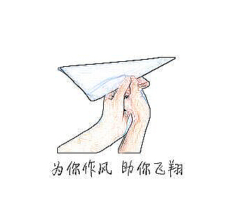

What it's like to be a volunteer teacher at Wanzi Primary School:
Building the wind so as to help you fly
August 12, 2017 (this program was translated into English in 2022)
In China, many young children, usually under 15 years old, have been left behind in the countryside in the care of relatives and friends because their parents have immigrated to the cities to look for better incomes. These children are called “left-behind children” (LBC). Living with relatives or non-relatives suffers a high risk of being neglected, and most LBC have problems in developing their future careers and social relationship. Our team, the Paper Plane Voluntary Service Group (PPVS), aims to address the barriers that keep LBC from embracing better life and relationships.
Lovely childern in Wanzi Primary School.

The Paper Plane Voluntary Service Group (PPVS) works to support LBC's personal development.
We constructed three subgoals to fulfill our mission. Specifically, helping LBC to:
(1) establish basic moral values to build a good character; (2) develop positive self-identity and improve interpersonal skills;
(3) determine proficiencies and interests to help create a solid career plan.
- Our main efforts include:
- Designing a diverse array of courses to expand LBC's horizons and help them to learn more about themselves, such as Exploring the Interest Island, Taking an insight into your body structure, Making good use of waste materials, Perceiving little life active in the field, and Funny Mathematics;
- Encouraging children to express their random thoughts and dreams through writing diary, drawing, or writing notes, and providing them instant feedback with substantial suggestions;
- Carrying out group counseling to help LBC create and sustain strong relationships as well as gain multiple perspectives and support from their peers;
- Conducting studies through home visits and developing questionnaires to investigate the relationship between LBC's loneliness and self-concealment, hope, friendship quality;
- Writing Research Reports to offer recommendations and implications for the local community and education organizations.


(a) PPVS member was giving the lesson. (b) I was lecturing about the bone structure for children. (c) PPVS member was distributing questionnaires. (d) The "dream tree" created by LBC. (e) A kid was showing his wonderful work. (f) PPVS members were discussing.
Childern were playing games with pingpong.
We organized a series of activities, including School Sports Day, Fun Games Parties, and Arts Festival, to strengthen LBC's physical body development, the relationship between peers and our members, and confidence when faced with challenges.

Childern were expressing their love to PPVS.
- PPVS provided service for more than 500 children in Wuhua Town, Meizhou.
- We received over 98% positive feedback from children and local educators.
- We gain a $2,000 investment from South China Normal University to support our program.
- We collected 230 questionnaires and finished the report which was awarded as Excellence.
- Five members of PPVS were awarded as Advanced Individual by South China Normal University.